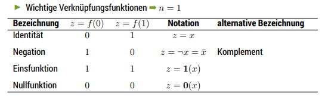
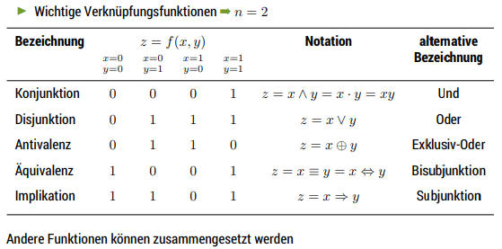
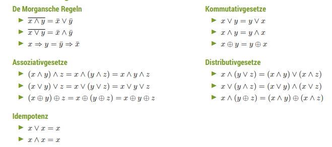
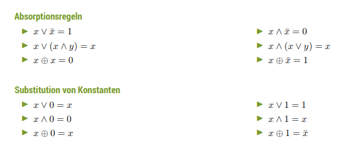
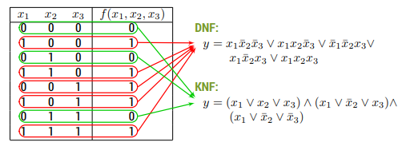

Logic and Abstract Machines (Automaten)
Boolean Algebra
Boolean algebra is the branch of algebra in which the values of the variables are the truth values true and false, usually denoted 1 and 0 respectively. Propositional logic (Aussagenlogik) is a branch of logic which deals with propositions (which can be true or false) and argument flow. Compound propositions are formed by connecting propositions by logical connectives. The propositions without logical connectives are called atomic propositions.
Principles:
- principle of bivalence (Zweiwertigkeit) → every proposition (Aussage) is either true (truthy) or false (falsy)
- principle/law of excluded third/middle → for any proposition, either that proposition is true or its negation is true - no third possibility is given
- principle/law of noncontradiction → no proposition can be true and false at the same time
- principle of extensionality → the truth value of a composite proposition (Aussageverknüpfung) only depends on the truth value of its components
F 3./4.
Logical Composition
The following logical compositions (Verknüpfungsfunktionen) will be inserted as pictures from the lecture slides because it is pretty time-consuming to port it over.


A set of logical compositions that is able to express all other compositions is called logically/functionally complete (logisch vollständig)
More laws and rules from lecture slides:


Normal Form
Normal forms can help with unifying boolean expressions/propositions which can get unclearly fast (unübersichtlich):
-
disjunctive normal form → is a standardization (or normalization) of a logical formula which is a disjunction of conjunctive clauses; it can also be described as an OR of ANDs or a sum of products
- slides: Eine boolsche Funktion ist in disjunktiver Normalform (DNF), wenn sie eine Disjunktion (Oder) von Konjunktionsstermen (Und) ist, wobei die Konjunktionsterme nur (ggf. negierten) Funktionsparameter enthält
- \(y = \vee_i (\wedge_j [\neg] x_{i,j}) \)
-
conjunctive normal form → is a conjunction of one or more clauses, where a clause is a disjunction of literals; otherwise put, it is an AND of ORs
- slides: Eine boolsche Funktion ist in konjunktiver Normalform (KNF), wenn sie eine Konjunktion (Und) von Disjunktionstermen (Oder) ist, wobei die Disjunktionsterme nur (ggf. negierten) Funktionsparameter enthält
- \(y = \wedge_i (\vee_j [\neg] x_{i,j}) \)
There are different ways to create normal forms eg conversions via boolean algebra or by using truth tables:

At this point the Karnaugh-Veitch Diagram for optimization purposes was mentioned which I'm skipping here. Take a look at slide 13 if you want (I don't lol).
Logic in C
C uses logical (boolean) propositions/expressions and knows an according type. However since that type is so close to integer, it was not made explicitly available before C99. Since C99 however there is _Bool. Via including stdbool.h the type bool is available which is a synonym for _Bool and can hold the values true or false.
But remember that everywhere were a boolean type is required there can always be an integer. If so 0 is always interpreted as false and every other value as true.
The logic/boolean operators && and || in C do so called short-circuit evaluation from left to right which means the second argument is executed or evaluated only if the first argument does not suffice to determine the value of the expression: when the first argument of the AND function evaluates to false, the overall value must be false; and when the first argument of the OR function evaluates to true, the overall value must be true
Short-circuit operators are, in effect, control structures rather than simple arithmetic operators, as they are not strict. In imperative language terms (notably C and C++), where side effects are important, short-circuit operators introduce a sequence point – they completely evaluate the first argument, including any side effects, before (optionally) processing the second argument (es ist eine gängige Programmiertechnik, links im Kurzschlussoperator eine Bedingung abzusichern, die rechts zu einem Laufzeitfehler führen würde)
Bad code example from the lecture slides follows, BRACE YOURSELF:
/* shortcut .c -- partial evaluation */
# include <stdio.h>
enum {arraysize = 4};
int z[arraysize] = {2, 42, 0, 23};
int r[arraysize];
int main () {
for (int i =0; i < arraysize; ++i) {
(z[i] != 0) && (r[i] = 1000/z[i]);
printf("%d. value : %d\n", i, r[i]);
}
return 0;
}
Some imho more practical pseudo examples could look like this:
int firedMissles = CanFireMissiles && FireMissiles();
/* or */
isFileReady() || getFileReady()
C also provides a conditional operator. If any operator is used on three operands or variable is also known as Ternary Operator. It can be represented with "? : ".
The ternary operator is used to execute code based on the result of a binary condition.
It takes in a binary condition as input, which makes it similar to an 'if-else' control flow block. It also, however, returns a value, behaving similar to a function (functional model).
result = binaryCondition ? valueReturnedIfTrue : valueReturnedIfFalse;
The ternary cannot be used to execute code. It must be either returned in a function, or set equal to a variable with the same data type as the returned values:
int findMaximum(int a, int b){
//if a > b, it returns a, if not it returns b
return (a > b) ? a : b;
}
Some interesting notes and observations about the ternary operator can be found here.
The next lecture topic was the switch-case. I already covered that in this CS01 post and the rules from C++ apply to C aswell (other way round technically :D). Remember that "switch case" works with constant values as its cases and is used to "jump" to a specific statement from where execution will be continued until you break or return! so following cases would be executed as well (avoid this and rather group cases together. It is also important to know that cases inside a switch are like "goto" labels and share scope, thats why often times people wrap the cases code inside "{}" to create case specific code and dont "skip" initialization of variables).